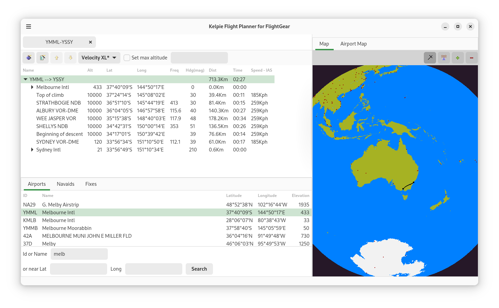

Welcome to Kelpie Flight Planner¶
Welcome to Kelpie Flight Planner¶
The Kelpie Flight Planner is a flight planner for Flightgear open source flight simulator. The planner uses the airport and navigation aids databases (files) from the Flightgear project to create flight plans X-Plane uses the same airport and nav aid data, and the kelpe flight planner can be used for planning flights for X-Plane or in fact any other flight simulator. Note: The Kelpie Flight Planner should not be used for real world flight planning.
Features.¶
Powerful searching for Airports and Navigation aids.
Automatic or manual flight plans.
XML storage of flight plans.

The Kelpie Flight Planner is licensed under the GNU Public License |